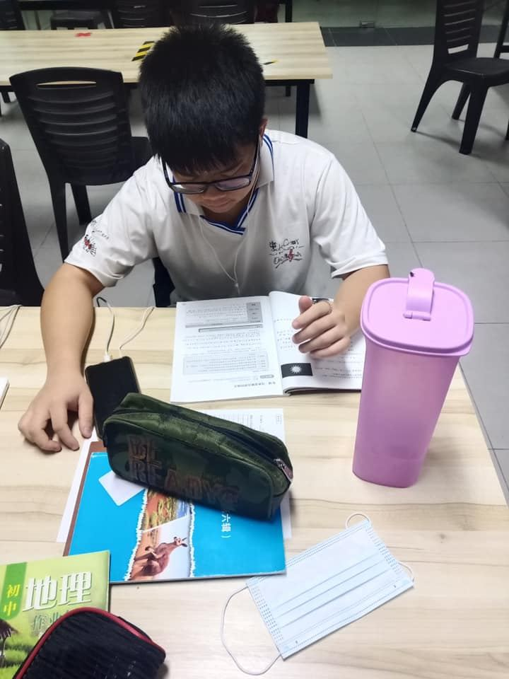
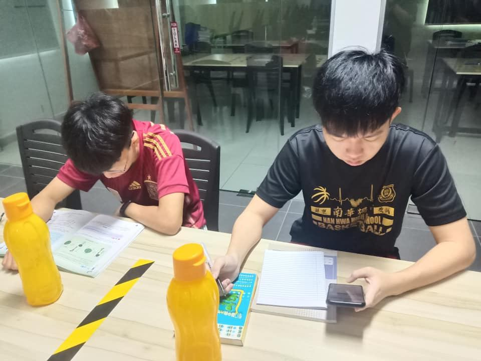
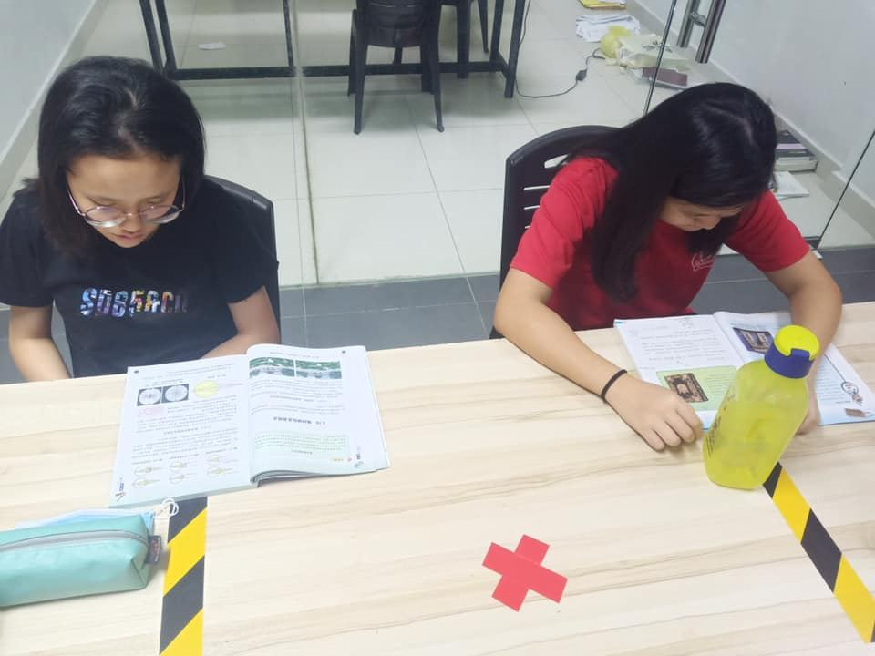
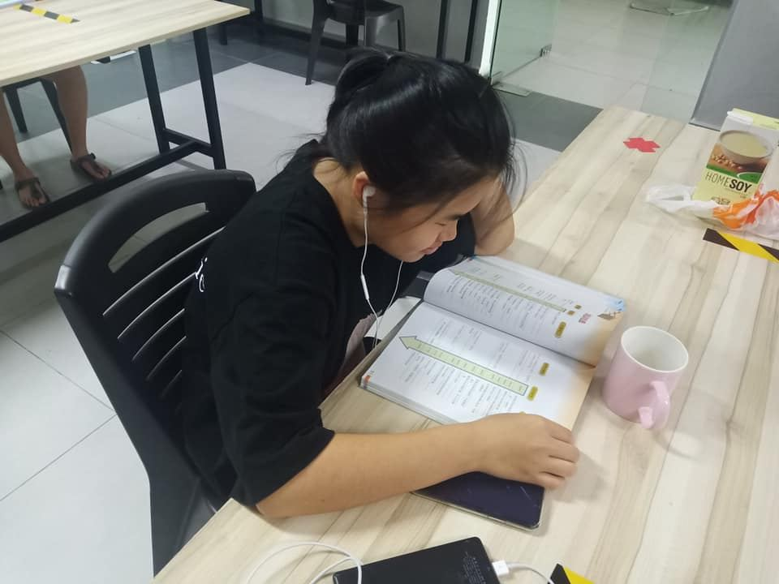
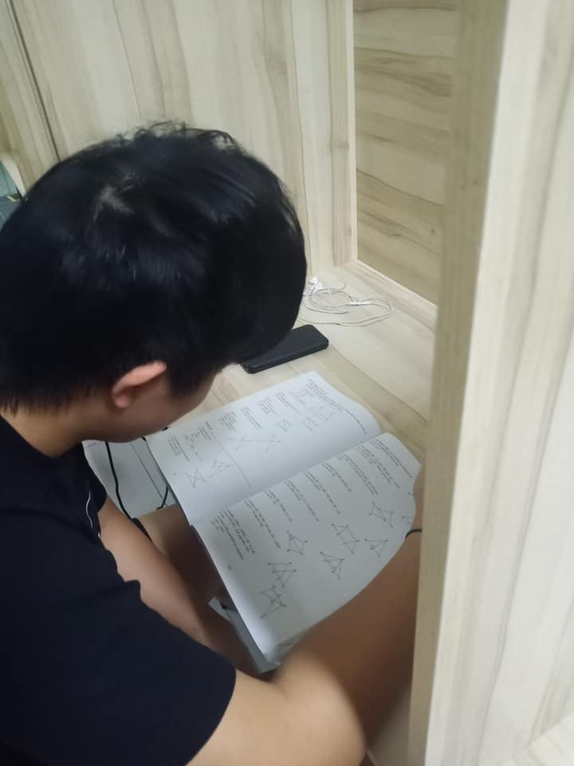
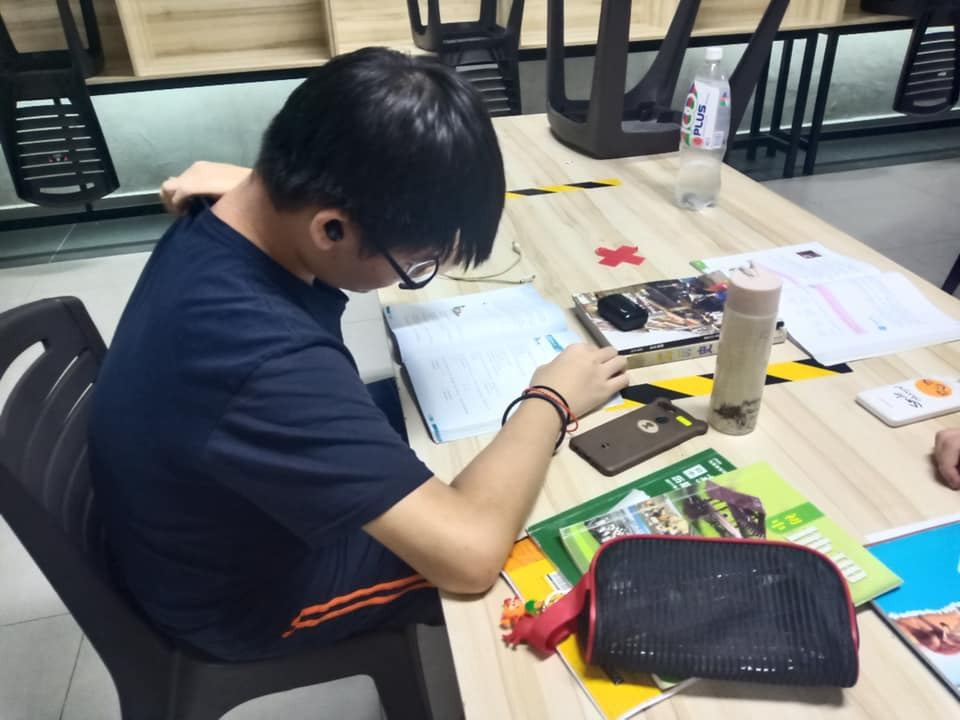
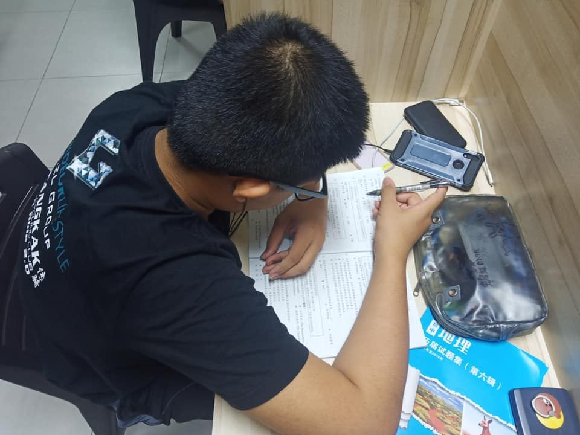
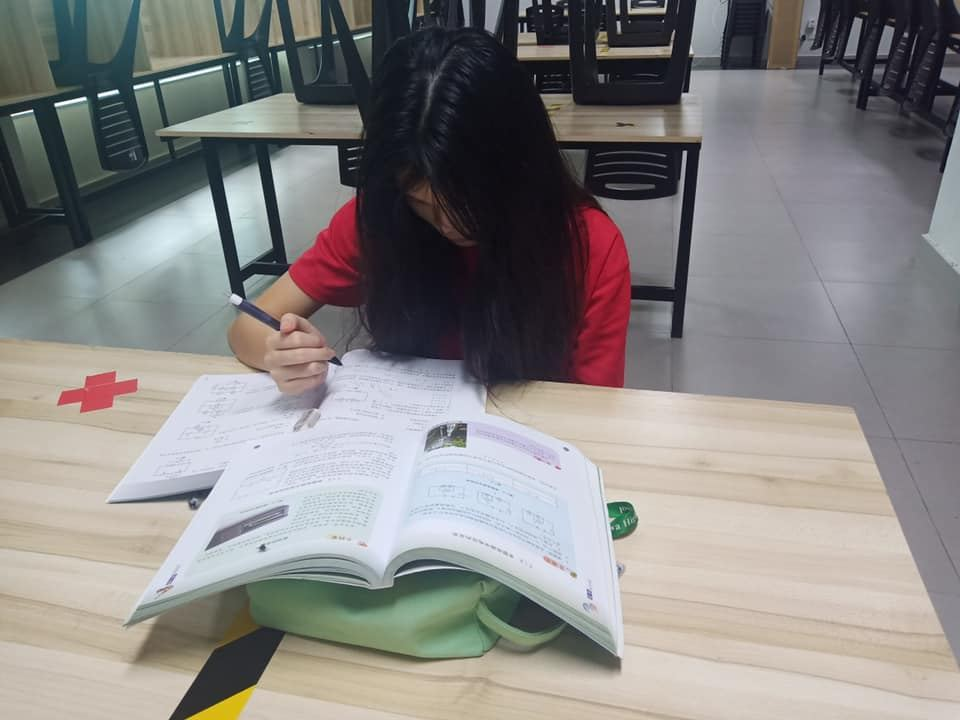

返回学校住宿的寄宿生及通读生，每天根据宿舍安排的时间（上午10点到中午1点、中午
返回学校住宿的寄宿生及通读生，每天根据宿舍安排的时间（上午10点到中午1点、中午2点到下午5点、晚上7点到晚上10点）在宿舍自修室温习功课，为即将来临的高初三统考做好准备。








返回学校住宿的寄宿生及通读生，每天根据宿舍安排的时间（上午10点到中午1点、中午2点到下午5点、晚上7点到晚上10点）在宿舍自修室温习功课，为即将来临的高初三统考做好准备。







